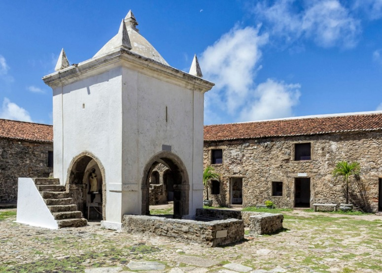

Roots Guide
Pontos Historicos

Museu do Amanhã
Museu construído na capital fluminense ao lado da Praça Mauá, na Zona Portuária. Vai propor uma viagem imersiva e tecnológica simulando os próximos 50 anos, propondo a reflexão do público sobre temas importantes, como sustentabilidade e o futuro da humanidade. Curiosidades: É um museu de ciências interativo. Planejado pelo arquiteto espanhol Santiago Calatrava, ele convida o público a explorar os possíveis futuros da humanidade e do planeta através de arte, tecnologia e dados científicos. Endereço: Praça Mauá, 1 - Centro, Rio de Janeiro, RJ Valor de entrada: R$ 70 (inteira) e R$ 35 (meia) Pessoas com mais de 60 anos, crianças de até 5 anos, estudantes e professores da rede pública, guias de turismo, acompanhantes de PCDs e durante todos os feriados nacionais. No dia 10 de cada mês, o valor é reduzido para R$ 10 (preço único). Quinta a terça, das 10:00 às 18:00 (fechado às quartas). Horários: Quinta a terça, das 10:00 às 18:00 (fechado às quartas). Link do Maps: link